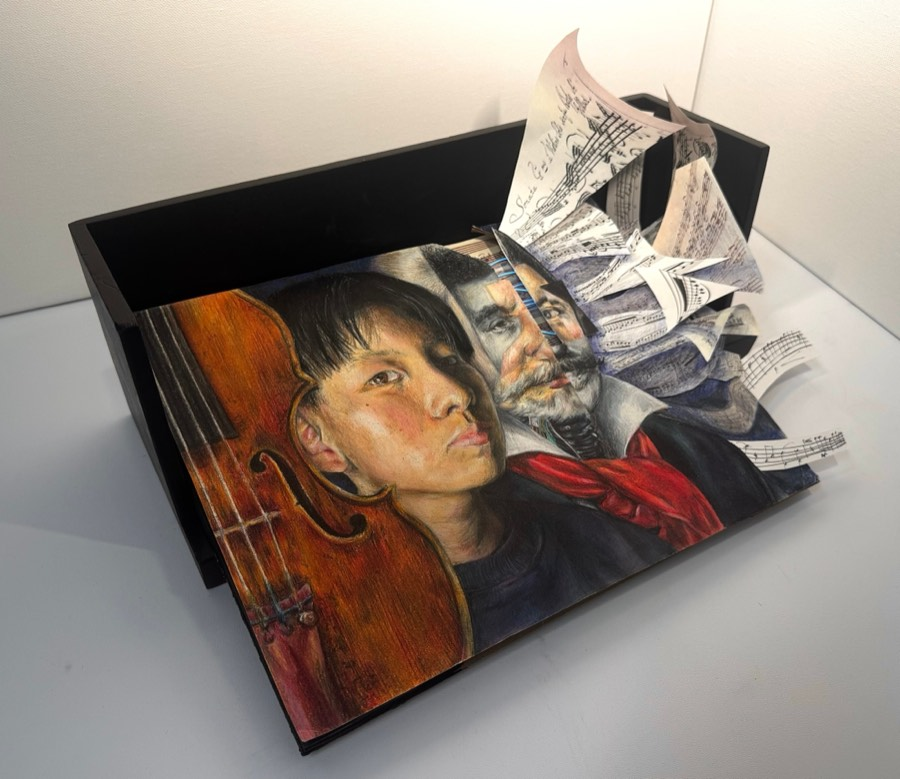

About Me
I'm Yishan Lin, a junior at Monta Vista High School in the Bay Area.
I build an art portfolio that translates classical music into visual form through mixed media. Experimenting with medium, composition, texture, and narrative, I interpret musical works and their influence on people, as well as my own musical journey.
Coming from this artistic background, I wish to connect my creative expression with code to explore the interdisciplinary field of game design. I want to develop games to positively shape how people think, learn, and engage with the world.
Resume
Download Resume (.docx)Education
Monta Vista High School, Cupertino, CA | Class of 2028, Grade 11
- GPA: 4.50 Weighted / 4.00 Unweighted (10th), 4.14 Weighted / 4.00 Unweighted (9th)
- AP Physics 1 (5), AP Computer Science A (5)
- Coursework: AP Physics 1, AP Computer Science A, AP Biology, AP Calculus BC, AP Chinese, AP US History, Honors American Literature, Pre-Calculus Honors, Chamber Orchestra
STEM Programs
- University of California Santa Cruz California State Summer School for Mathematics and Science (COSMOS): Cluster 5: Design of Fun, From Concept to Code, Summer 2026
- University of California Irvine x GATI Game Science and Entertainment Technology (GSET) Program, Summer 2025
Music
Monta Vista High School Orchestra
- Concertmaster / Associate Concertmaster, Chamber Orchestra (2025–2027)
- Monta Vista-Lynbrook-Livermore Central Europe Tour (as Concertmaster): Smetana Hall (Prague), RamArts (Budapest), Musikverein (Vienna), Summer 2026
- Double Bassist, String Orchestra (2024–25)
San Jose Youth Symphony
- Philharmonic Orchestra: 1st Violin (2026–27), 2nd Violin Principal (2025–26), 2nd Violin (2024–25)
- Poland & Czechia International Tour, Summer 2025
Other Music Honors
- California All-State Symphony Orchestra, 2nd Violin (2025–26)
- California All-State String Orchestra, 1st Violin (2024–25)
- Associated Board of the Royal Schools of Music (ABRSM) Violin Grade 8: Distinction (2024)
Leadership & Service
- Bay Area Youth Music Society (BAYMS): Bimonthly violin playing at senior homes (2026–27)
- Social Media Manager / Treasurer, Tri-M Music Honor Society, Monta Vista High School (2026–27)
- Teaching Assistant/Camp Leader, Hongyun Art School (2020–2025)
- American Volunteer Service Award (AVSA): Bronze Award (2025–26)
- Gold Presidential Volunteer Service Award (2023–24)
- 300+ community service hours since 2023
Awards: Art
- Scholastic Art & Writing Awards: Gold Key Mixed Media (2025–26); Silver Key Drawing, Silver Key Photography (2024–25); Gold Key Film & Animation, Silver Key Drawing, Honorable Mention (2023–24)
- Bay Area Creative Youth Award: Exceptional (2025–26), Special Award (2024–25)
- Cupertino Emerging Artist Award: Silver (2025–26)
- Cupertino Young Artist Award: Platinum (2023–24)
- Dr. Jerry Hiura Inspiration Award: 3rd Place (2025)
Projects
A game built as the capstone project for UCSC COSMOS 2026, made with a team of five over the course of one month.
- Art Lead — designed and produced all in-game visual assets
- Designer — helped shape the artistic vision and core game mechanics
Godot · GDScript · Procreate
A serious game designed to help students learn rhythmic structures and tempo through fun, rhythm-game-like gameplay, featuring both adaptive and reward visual/audio feedback.
Unity · C# · Aseprite
A Java Swing-based violin note and rhythm matching game, built to help new violinists learn note positions on their violin while providing a fun, rewarding experience.
Java · Java Swing
A game built with Unity that gamifies recycling, helping players learn what type of bottle waste to recycle.
Unity · C# · Procreate
Built in two weeks at the UCI × GATI GSET summer program with a team of engineers and artists — a Unity MVP trailer for an escape into a dangerous, dreamy, surreal world. I designed all visuals and directed the final trailer.
Unity · C# · Procreate